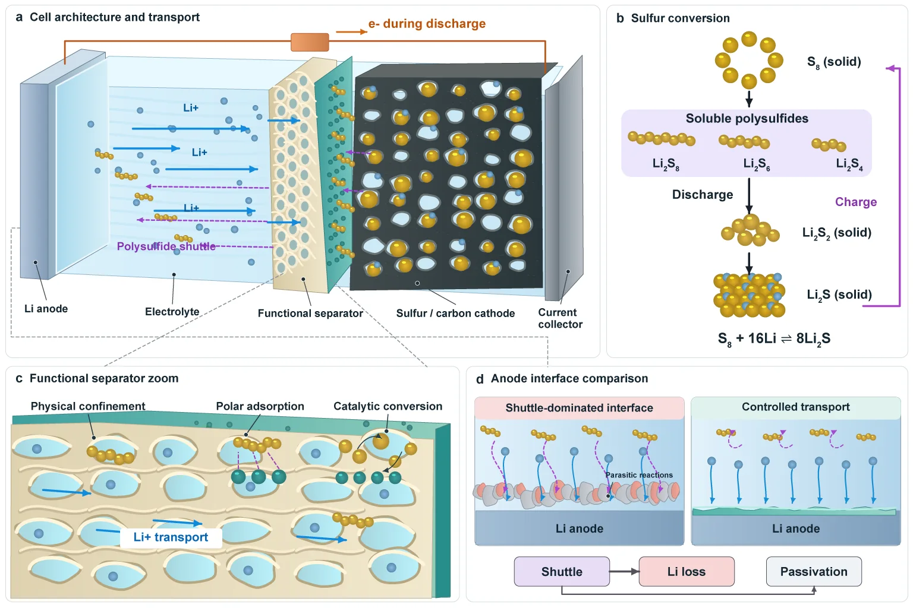
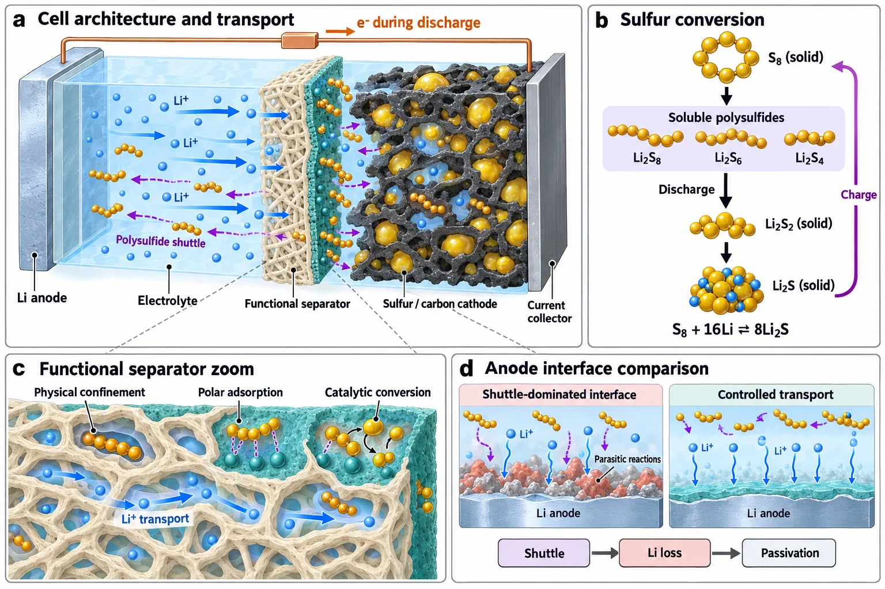

Open source · research skills for AI agents
Research, continued.
Turn research questions, evidence, experiments and papers into one project you can keep moving forward. Literature, ideas, design, experiments, analysis, journal selection, writing, figures and review live in one project folder; Memory remembers where each decision came from, and the Leader decides what happens next.
- lichen-soil-ph/
- ├─README.mdquestion, stage, next step
- ├─Memory/current.md · events/
- ├─Literature/manifest.json · Searches/
- ├─Idea/IDEA-0001_pH-gradient/
- ├─Design/PROT-0001_site-strata/v02/
- ├─Experiment/EXP-0001_ordination/
- ├─Analysis/AN-0001_community/
- ├─Journal/JRN-0001_round-1/
- ├─Write/PAPER-0001_lichens-pH/
- ├─Figure/Methods/ · Data/
- └─Review/REV-0001_draft-v1/
- YouContinue lichen-soil-ph. Read Memory first, then check the current versions.
- RestoreRead Memory/current.md
- Last decision: add a pH-stratified control · source AN-0001
- VerifyAnalysis/AN-0001/analysis-report.md
- The ordination in runs/R001 matches Memory
- ActHand off to light-design → Design/PROT-0001/v02/
- Decision and rationale written back to Memory/events/
How the Leader works Memory/
Restore, verify,
then act.
A new conversation doesn’t have to start from zero. The Leader reads project memory, checks the actual state against the original files, then hands the next step to the right skill.
-
01
Restore
Read Memory and the latest handoff: why the direction changed, which plan failed, which constraints still hold — each with its source.
-
02
Verify
Go back to the papers, code, run results and adopted figures to confirm the actual state; if a source changed or sources conflict, flag it for re-checking.
-
03
Act
Hand the next step to the right skill. Real progress from research or revisions is written back to Memory, and the next round starts there.
Research can go back Literature/ → Analysis/
A research loop
you can walk back
Analysis can expose gaps in execution, design or the question itself, and review can ask for more evidence or a different journal. Pick a stage to see who owns it, where its output goes and where it can lead back to.
19 skills light-*/SKILL.md
One job each,
every output in its place
15 main skills plus 4 dedicated Diagram entries. Start from scratch, or bring an existing paper, data, code or reviewer comments and go straight to the stage you need.
The skill install directory holds capabilities; the research project directory holds results. Files appear only when there is content for them, and an existing project structure takes priority. Read the full project layout spec (Chinese) ↗
Data figures · light-chart Figure/Data/
Every chart comes from real data
Choose the chart from the scientific question and the data structure; keep experimental units, repeated measurements, missing values and uncertainty; then handle layout, color, annotation and export. The nine figures below were drawn by light-chart in Python / R, each with its data source.
Method and mechanism figures · light-diagram Figure/Methods/


Generate a reference, then rebuild it natively
Pin down the scientific question, objects and relationships first; turn them into a structural blueprint and a prompt; generate the image and check labels, relationships and evidence boundaries. When the figure needs more editing, rebuild it as a native Illustrator, PowerPoint or Visio file.
Install light-*/
Install with one message to your agent
Choose a global or a project-level install first, then install the skills you need from the skills table. For a project-level install, change into the project folder first.
Install the research skills from https://github.com/Light0305/Light-Science.
Ask me first whether to install globally or for the current project, then install the skills I need from the skills table in the README.Paste it into Claude Code, Codex or another agent. It will ask whether to install globally or for the current project, then install from the skills table.
PS> npx.cmd skills@latest add Light0305/Light-Science
PS> npx.cmd skills@latest add https://github.com/Light0305/Light-Science/tree/master/light-chart/skills/light-chartRun in PowerShell. The first command installs the top-level skills; the second adds Chart from its nested folder. The second command asks for the agent and install scope again — choose the same as the first time, or Chart will land somewhere else. To install a single skill, add --skill light-write.
$ npx skills@latest add Light0305/Light-Science
$ npx skills@latest add https://github.com/Light0305/Light-Science/tree/master/light-chart/skills/light-chartRun in a terminal. The first command installs the top-level skills; the second adds Chart from its nested folder. The second command asks for the agent and install scope again — choose the same as the first time, or Chart will land somewhere else. To install a single skill, add --skill light-write.
Start from a real question
After copying, replace the <angle-bracket> parts with your question, materials and project path before sending.
Use light-leader to move this project forward: I want to study <specific question>, and I already have <papers/data/code>. The project lives at <project path>, and the goal is <a paper / a software copyright and related outputs>. First read the existing project memory and the actual materials, find the most pressing problem, then complete the step that can be done now.
Continue <project path>. Read Memory and the latest handoff first, then check the adopted versions of the manuscript, figures and analyses. This round, handle <research question or reviewer comments>, and write the results, the reasons for each decision and the next step back into the project.
For a focused task, just say “use light-chart to plot this data” or “use light-write to revise this section”. The skill instructions are written in Chinese; ask your agent to reply in English if you prefer.
Feedback and support
Bring a real case,
help make it better
Use cases, problems, missing domain support and reproducible suggestions are all welcome. When opening an issue, say which skill you used, what you expected and what happened, and attach minimal reproducible material.